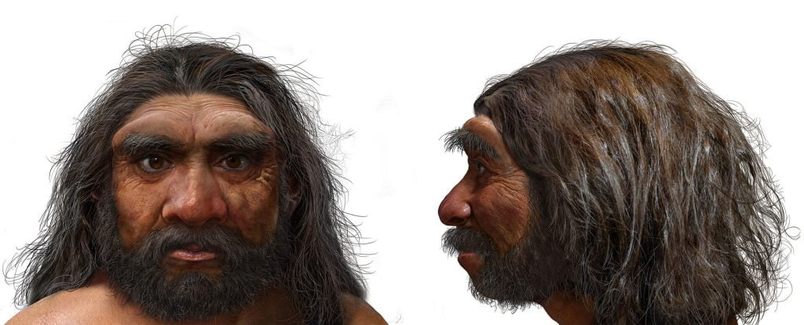
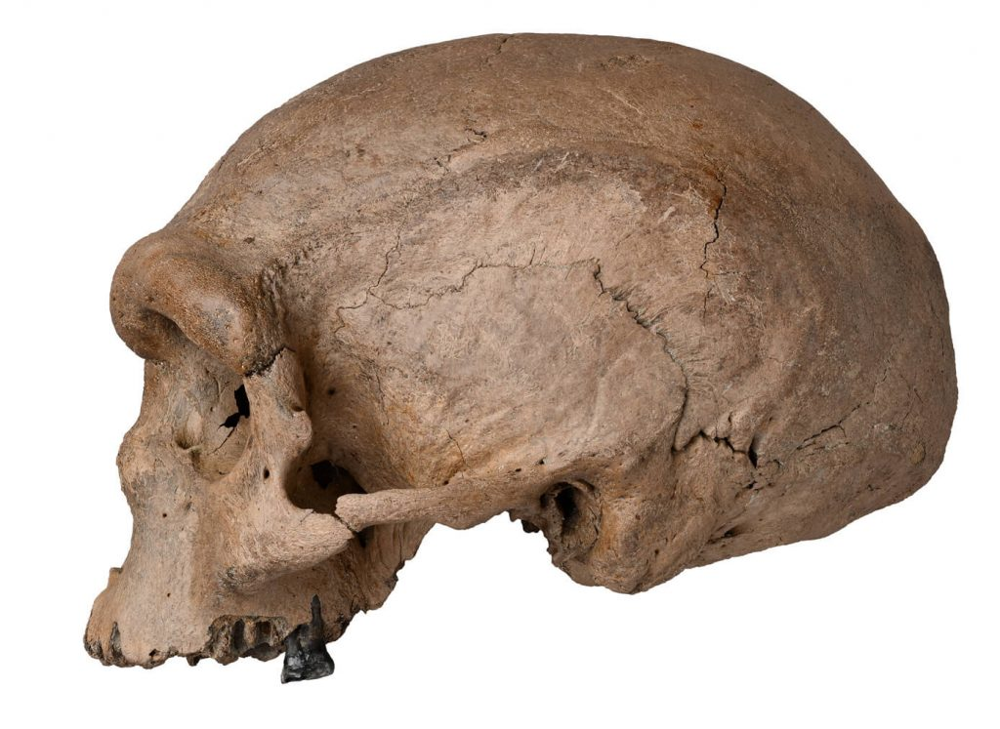
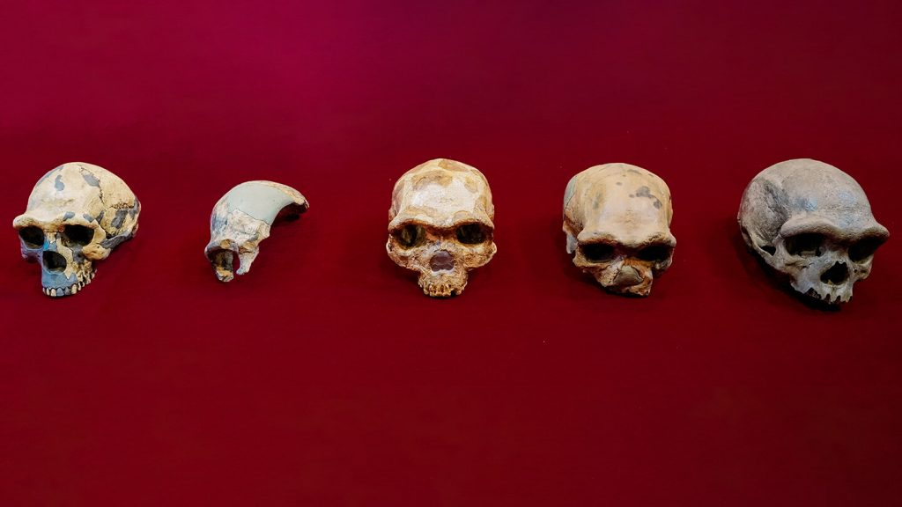

တရုတ်ပညာရှင်များရဲ့ အဆိုအရ ဒီ လူသားမျိုးနွယ်စု အသစ်ဟာ ဆိုရင် လက်ရှိ လူသားတွေနဲ့ အနီးစပ်ဆုံး မျိုးနွယ်စု ဖြစ်တယ်လို့ ဆိုပါတယ်။ လက်ရှိကာလအထိ ရှာဖွေတွေ့ရှိခဲ့တဲ့ လူတူ မျိုးနွယ်တွေထဲမှာ ဟိုမို နီယန်ဒါသဲလ် (Neanderthals) နဲ့ ဟိုမို အီရက်တပ်စ် (Homo erectus) တို့ဟာ လူသားတွေနဲ့ အနီးစပ်ဆုံး လူတူ ဆွေမျိုးတွေ ဖြစ်ကြပါတယ်။
အခုတွေ့တဲ့ လူသားမျိုးနွယ်စုကို ပညာရှင်တွေက Dragon Man နဂါးလူသား လို့ အမည်ပေးထား ကြပါတယ်။ ဒီလူသား မျိုးနွယ်စုဟာ အာရှ အရှေ့ပိုင်းမှာ လွန်ခဲ့တဲ့ နှစ်ပေါင်း ၁၄၆,၀၀၀ ကာလတုန်းက နေထိုင်ခဲ့ကြတယ်လို့ ဆိုပါတယ်။
ဒီဦးခေါင်းကို တကယ်တော့ အခုမှ ရှာတွေ့တာ မဟုတ်ပါဘူး။ ၁၉၃၃ ခုနှစ်က တရုတ်ပြည် အရှေ့မြောက်ပိုင်း ဟာဘင် ဒေသမှာ တူးဖေါ်တွေ့ရှိခဲ့တာ ဖြစ်ပါတယ်။ ဒါပေမယ့် အဲ့ဒီအချိန်က ပညာရှင်တွေရဲ့ စိတ်ဝင်စားမှုကို မရရှိခဲ့ပဲ မေ့လျှော့ ခံခဲ့ရတာပါ။
ဒီဦးခေါင်းခွံကို လေ့လာတွေ့ရှိချက်တွေကို သုတေသန ဂျာနယ်တစ်စောင်ဖြစ်တဲ့ The Innovation မှာ ဖေါ်ပြထားတာ ဖြစ်ပါတယ်။
ဒီသုတေသနကို တရုတ်ပညာရှင်တွေချည်း ပြုလုပ်တာတော့ မဟုတ်ပါဘူး။ နိုင်ငံတကာက ထင်ရှားကျော်ကြားတဲ့ ရှေးဟောင်းသူတေသန ပညာရှင်တွေလဲ ပါဝင်ပါတယ်။ သုတေသနမှာ ပါဝင်တဲ့ ပညာရှင် တစ်ယောက်ကတော့ လန်ဒန် သဘာဝ သမိုင်းပြတိုက် (London Natural History Museum) က ထင်ရှားတဲ့ ပညာရှင် တစ်ယောက်ဖြစ်တဲ့ ပရော်ဖက်ဆာ ခရစ်စ် စထရင်ဂျာ (Prof Chris Stringer) ပဲ ဖြစ်ပါတယ်။ သူဟာ လူထားမျိုးနွယ်စု ဆင့်ကဲ ဖြစ်စဉ်နဲ့ ပါတ်သက်ရင် ထိပ်တန်းပညာရှင် တစ်ဦး ဖြစ်ပါတယ်။
“လွန်ခဲ့တဲ့ နှစ်သန်းပိုင်းတွေကာလအတွင်း အသက်ရှင် နေထိုင်ခဲ့တဲ့ လူတူမျိုးနွယ်တွေရဲ့ ကျောက်ဖြစ်ရုပ်ကြွင်း ရှာဖွေတွေ့ရှိမှု တွေထဲမှာ အခု ရှာဖွေတွေ့ရှိမှုက အရေးအပါ ဆုံးပဲ” လို့ သူက ပြောပါတယ်။
“အခုတွေ့ရှိတဲ့ လူသား မျိုးနွယ်ဟာ လူသား ဆင့်ကဲဖြစ်စဉ် လမ်းကြောင်းပေါ်က လူမဖြစ်မီ ကြားကာလ တစ်ခု မဟုတ်ပါဘူး။ ဒီမျိုးနွယ်ဟာ လူသားတွေနဲ့ ကွဲပြားတဲ့ သီးခြား လူတူ မျိုးနွယ်စု ဖြစ်ပါတယ်။ ဒီမျိုးနွယ်ဟာ လူသားတွေရဲ့ ဘေးဘိုး မျိုးနွယ် တစ်ခုကနေ သီးခြားကွဲထွက်လာပြီး သူ့ဟာသူ သီးသန့် ဖွံ့ဖြိးလားတဲ့ မျိုးနွယ်စု တစ်ခု ဖြစ်ပါတယ်။ အခုတော့ လူဖြစ်ခွင့် မရပဲ တိမ်ကောသွားရပါပြီ။” လို့ ပရော်ဖက်ဆာ စထရင်ဂျာက ဆက်ပြောပါတယ်။

အခု မျိုးနွယ်သစ်ကို ပညာရှင်တွေက Homo longi လို့ အမည်ပေးထားပါတယ်။ တရုတ်စကားလုံး long ရဲ့ အဓိပ္ပါယ်က နဂါး လို့ အဓိပ္ပါယ် ရပါတယ်။ မြန်မာလို ပြန်ရရင် နဂါးလူသား (Dragon Man) ပေါ့။
“ငါတို့ဟာ တို့ရဲ့ လူသားတွေရဲ့ ပျောက်ဆုံးနေတဲ့ ညီမလေးကို ရှာဖွေတွေ့ရှိတာ ဖြစ်တယ်” လို့ တရုတ်သိပ္ပံ အကယ်ဒမီ (Chinese Academy of Sciences) က ပရော်ဖက်ဆာ ဇီဂျွန်နီ (Xijun Ni) က ပြောပါတယ်။
အခုတွေ့ရှိတဲ့ ဦးခေါင်းခွံဟာ အခြား လူတူမျိုးနွယ်တွေရဲ့ ဦးခေါင်းခွံနဲ့ ယှဉ်ရင် အတော်လေး ကြီးမားပါတယ်။ ဒီဦးခေါင်းဟာ ကျွန်တော်တို့ လက်ရှိ လူသားတွေရဲ့ ဦးခေါင်းခွံနဲ့ အရွယ်အစား မတိမ်းမယိမ်း တူညီပါတယ်။
နဂါးလူသား (Dragon Man) မှာ လေးထောင့်ပုံ မျက်တွင်းတွေ ရှိပါတယ်။ ဒါ့အပြင် ပါးစပ်ပေါက်ကျယ်ပြီး သွားတွေကလဲ အတော် ကြီးပါတယ်။ ဒီဦးခေါင်းဟာ တွေ့ရှိရသမျှ အစောပိုင်း လူတူမျိုးနွယ်စုတွေရဲ့ ဦးခေါင်းခွံ တွေ့ရှိမှုတွေထဲမှာ အတော်လေး ပြည့်စုံတဲ့ ဦးခေါင်းခွံ ဖြစ်ပါတယ်လို့ အခြား သုတေသန ပညာရှင် တစ်ယောက်ဖြစ်တဲ့ Hebei GEO University က ပရော်ဖက်ဆာ ကင်ဂျီ (Prof Qiang Ji) ကပြောပါတယ်။
“ဒီဦးခေါင်းမှာ အစောပိုင်း လူတူမျိုးနွယ်တွေရဲ့ လက္ခဏာတွေရော၊ ခေတ်သစ် လူသားတွေရဲ့ လက္ခဏာ တွေရော ရောပြွမ်း ပါဝင်နေပါတယ်။ ဒီအချက်က အခြား လူတူမျိုးစုတွေနဲ့ သိသိသာသာ ကွဲပြားတဲ့ အချက် ဖြစ်ပါတယ်” လို့ ပရော်ဖက်ဆာ ကင်ဂျီ က ဆက်ပြောပါတယ်။

ဒီဦးခေါင်းကို ၁၉၃၃ ခုနှစ်က ဆောက်လုပ်ရေး လုပ်သား တစ်ယောက်က ရှာဖွေတွေ့ရှိခဲ့တာပါ။ အဲ့ဒီတုန်းက ဟေလုံကျင်း ပြည်နယ် ဟာဘင်ဒေသအတွင်း ဖြစ်စီးနေတဲ့ စုန်ဟွာဖြစ် ပေါ်မှာ တံတားဆောက်နေတဲ့ လုပ်သားတစ်ယောက်က ရှာဖွေတွေ့ရှိခဲ့တာပါ။ စုန်ဟွာမြစ်ကို အင်္ဂလိပ်လို ပြန်ရှင် နဂါးနက် လို့ အဓိပ္ပါယ် ရပါတယ်။ ဒါ့ကြောင့်လဲ သူ့ကို နဂါးလူသားလို့ ခေါ်ကြတာ ဖြစ်ပါတယ်။
အဲ့အချိန်က ဟာဘင်မြို့ဟာ ဂျပန် သိမ်းပိုက်မှု လက်အောက်မှာပါ။ ဂျပန်တွေလက် မကျအောင် တွေ့ရှိတဲ့ ဆောက်လုပ်ရေး လုပ်သားဟာ ဒီခေါင်းခွံကို ခိုးထုတ်ပြီး အိမ်သယ်သွားပါတယ်။ အိမ်မှာ နှစ် ၈၀ လောက်သိမ်းထားပြီး သူသေခါနီးမှာမှ သူ့မိသားစုကို ဒီဦးခေါင်းနဲ့ ပါတ်သက်ပြီး ထုတ်ပြောခဲ့တာပါ။ ဒါ့ကြောင့်လဲ အခုမှ ပညာရှင်တွေ လေ့လာခွင့် ရကြတာ ဖြစ်ပါတယ်။
ဒီ နဂါးလူသား Dragon Man လိုပဲ မျိုးစိတ်ခွဲရ ခက်နေတဲ့ အခြားလူသားရုပ်ကြွင်းတွေကိုလဲ တရုတ်ပြည်မှာ ရှာဖွေတွေ့ရှိခဲ့ ကြပါတယ်။ ပညာရှင်တွေ ကြားမှာတော့ ဒီ ရုပ်ကြွင်းတွေဟာ လူသားမျိုးစိတ် (Homo sapiens)၊ နီယန်ဒါသဲလ် နဲ့ ဒယ်နီဆိုဗန် (Denisovans) လူတူမျိုးနွယ်တွေရဲ့ ရှေးဦးကာလ ရုပ်ကြွင်းတွေလား၊ သီးသန့် လူတူမျိုးနွယ်တွေလား ဆိုတာကို အခုထိ ပညာရှင်တွေကြားမှာ အငြင်းပွား နေကြဆဲ ဖြစ်ပါတယ်။
အခြား လူတူမျိုးနွယ် တစ်ခုဖြစ်တဲ့ ဒယ်နီဆိုဗန် မျိုးနွယ်ဟာ လွန်ခဲ့တဲ့ နှစ်ပေါင်း ၅၀,၀၀၀ ကနေ ၃၀,၀၀၀ အတွင်း နေထိုင်ခဲ့တဲ့ ကျောက်ဖြစ်ရုပ်ကြွင်း သက်သန်းလေးရဲ့ DNA ကနေ ရှာဖွေတွေ့ရှိခဲ့တာ ဖြစ်ပါတယ်။
အင်္ဂလန်နိုင်ငံ ကိန်းဗရစ် တက္ကသိုလ် (Cambridge University) က လူသားပညာရှင် ပရော်ဖက်ဆာ မာတင် မီရာဇွန် (Prof. Martin Mirazon) ကတော့ အခုရှာတွေ့တဲ့ နဂါးလူသားဟာ တကယ်တော့ ဒယ်နီဆိုဗန် လူတူမျိုးနွယ် ဖြစ်တယ်လို့ ယုံကြည်ပါတယ်တဲ့။
“ဒယ်နီဆိုဗန် DNA ကိုလေ့လာချက်အရ တိဘက်မှာ တွေ့ရှိခဲ့တဲ့ ရုပ်ကြွင်းရဲ့ မေးရိုးဟာ ဒယ်နီဆိုဗန် ဖြစ်ဖို့များပါတယ်။ အခု နဂါးလူသားကလဲ တိဘက်လူသားနဲ့ မေးရိုးပုံ သဏ္ဍာန်နဲ့ အတော်ဆင်တူပါတယ်။ ကျွန်မကတော့ ဒါဟာ ဒယ်နီဆိုဗန် လူတူမျိုးနွယ်ရဲ့ ပထမဆုံး မျက်နှာသွင်ပြင် ဖြစ်တယ်” လို့ ဆက်ပြောပါတယ်။

ဒါပေမယ့် တရုတ်ပညာရှင်တွေကတော့ အခုတွေ့ရှိတဲ့ ဦးခေါင်းခွံဟာ လူသားမျိုးနွယ် သီးသန့်တစ်ခု ဖြစ်တယ်လို့ ယုံကြည်ကြပါတယ်။
“ဒီတွေ့ရှိမှုကြောင့် ပညာရှင်တွေ ကြားမှာ အကြီးအကျယ် အငြင်းပွားမှုတွေ၊ ငြင်းခုံမှုတွေ ဖြစ်လာပါလိမ့်မယ်။ ဒီတွေ့ရှိမှုကို လက်မခံတဲ့ ပညာရှင်တွေလဲ အများကြီး ပေါ်လာမှာပါ။ ဒါပေမယ့် ဒါက သိပ္ပံပဲလေ။ ဒီလို ငြင်းခုံမှုကြောင့်ပဲ သိပ္ပံ ပညာက တိုးတက်လာတာပဲ မဟုတ်လား” လို့ ပရော်ဖက်ဆာ ဇီဂျွမ်နီ က ပြောပါတယ်။
Reference: Scientists hail stunning ‘Dragon Man’ discovery | BBC